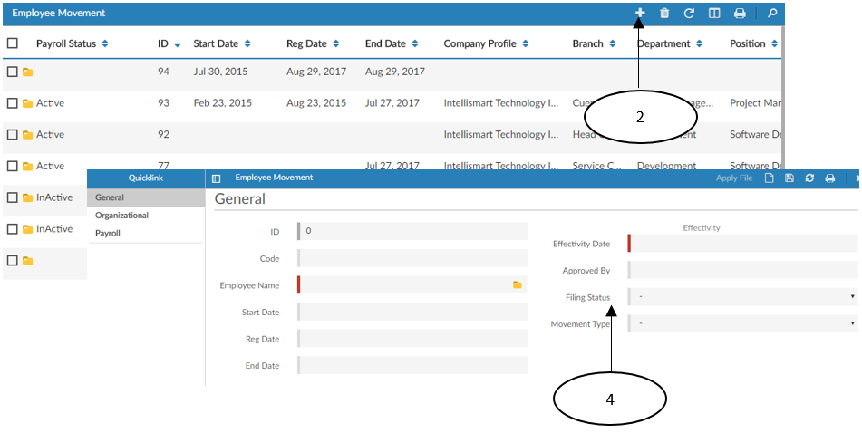

D. Employee Movement
Employee Movement
- This module provides an avenue on to change important details on employee data upon approval.
To access this module:
1: Go to INSYS PEOPLE > Transaction > Employee Movement
2: Click on “New” button.
3: Input the HEADER and necessary changes at the DETAILS
HEADER
Employee name – The name of employee must be tagged
Movement type – select the kind of movement to be done.
DETAILS
The ones to change at those under the “TO” column. You may change only the necessary details needed to be changed.
Step 4: Change the “Filing Status” to “Approved”
Step 5: Click on “Save”
Step 6: Click on “Apply File” for the movement to take effect


- Employee Movement Image here –
Created with the Personal Edition of HelpNDoc: Produce online help for Qt applications